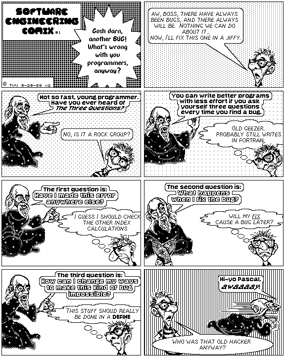

1989-07-05
Three Questions About Each Bug You Find
Do you sometimes fix a bug, and then find another bug related to the first or to the way you fixed it? When I fix a bug, I ask myself three questions to make sure I've thought carefully about its significance. You can use these questions to improve productivity and quality every time you think you've found and fixed a bug.
The key idea behind these questions is that every bug is a symptom of an underlying process. You have to treat the symptoms, but if all you do is treat symptoms, you'll continue to see more symptoms forever. You need to find out what process produced the bug and change the process. The underlying process that caused your bug is probably non-random and can be controlled, once you identify what happened and what caused it to happen.
Before you ask the three questions, you need to overcome your natural resistance to looking carefully at the bug. Look at the code and explain what went wrong. Start with the observable facts and work backwards, asking why repeatedly, until you can describe the pattern that underlies the bug. Often, you should do this with a colleague, because explaining what you think happened will force you to confront your assumptions about what the program is up to.
"It blew up because subscript J was out of range."
"Why?"
"J was 10 but the top array subscript is only 9."
"Why?"
"J is a string length, and the array origin is 0, so the last character in a string of length 1 is index 0."
Look for additional surprises in the situation at the time the bug was found. Check key program variables at the time of failure, to see if you can explain their values.
"Why is the name null?"
"Why was it trying to output an error message anyway?"
Keep notes of what you did and what happened. You need to know what is really going on, and this means keeping measurements and history.
When these steps are out of the way, you are ready to ask the first question.
1. Is this mistake somewhere else also?
Look for other places in the code where the same pattern applies. Vary the pattern systematically to look for similar bugs.
"Where else do I use a length as a subscript?"
"Do all my arrays have the same origin?"
"What would happen for a zero length string?"
Try to describe the local rule which should be true in this section of the code, but which the bug disobeyed; your search for this invariant[1] will help you see other potential bugs.
"The starting offset plus the length, minus 1, is the ending subscript.. unless the length is zero."
It's more productive to fix several bugs for every one you find. Trying to describe the bugs in general terms also raises your level of understanding of what the program is doing and helps you avoid introducing more bugs as you program.
2. What next bug is hidden behind this one?
Once you figure out how to fix the bug, you need to imagine what will happen once you fix it. The statement after the failing one may have a bug in it too, but the program never got that far before: or some other code may be entered for the first time as a result of your fix. Take a look at these untried statements and look for bugs in them.
"Would this next statement work?"
While you're thinking about control flow is a good time to ask if there are other unreached parts of the program.
"Are there combinations of features I've never tested?"
It doesn't take much work to instrument a program so you can check off as you execute its various parts; and it's often surprising how much of a program doesn't work at all after the builder says it's been tested.
"Can I make all the error messages come out in test?"
Beware of making a change in one place which causes a bug somewhere else. A local change to some variable may violate the assumptions made further on in execution.
"If I just subtract one from J, the move statement later will try to move -1 characters when the string length is 0."
If you've made a lot of changes to the program already, consider carefully whether adding another local fix is the right thing to do, or whether it's time to redesign and reimplement.
3. What should I do to prevent bugs like this?
Ask how you can change your ways to make this kind of bug impossible by definition. By changing methods or tools, it's often possible to completely eliminate a whole class of failures instead of shooting the bugs down one by one.
Start by asking when the bug was introduced: when in the development life cycle could the bug have been prevented?
"The design is OK; I introduced this bug in coding."
Examine the reason for the bug in detail. Think about the process that was going on at the moment that the bug was introduced, and ask how it could be changed to prevent the bug.
"Separate data types for offset and length would have caught this error at compilation time."
"Each text item could be output with a macro which hides the subscripting calculation. Then I can figure this out just once."
Don't be satisfied with glib answers. Suppose your explanation for a bug is, "I just forgot." How can the process be changed so you don't need to remember? The language can be changed so that the detail you omitted is completely hidden, or your omission is detected and causes a compiler diagnostic. You might use a language pre-processor for this problem domain, or a clever editing tool which fills in defaults, checks for errors, or provides hints and rapid documentation. The bug may be a symptom of communication problems in the programming team, or of conflicting design assumptions which need discussion.
Consider the way the bug was found, and ask how it could have been found earlier. How could testing be made more air-tight? Could tests be generated automatically? Could in-line checking code be added that would trap errors all the time?
"I should try a zero length string in my unit tests."
"I could enable subscript checking and catch this sooner."
Systematic methods and automated tools for compilation, build, and test are always worth creating. They pay for themselves quickly, by eliminating long debugging and fact-finding sessions.
Applications of the Technique
Make a habit of asking the three questions every time you find a bug. You don't even have to wait for a bug to use the three questions.
During design and implementation review, each comment you get can be treated with the three questions. Review comments are the result of an underlying communication process which you can improve. If you feel that a reader's comment on a specification is wrong, for example, you might ask what kept your document from being understood, and how you might communicate better with the reviewer.
Design and code inspections[2] are a powerful means of finding many bugs. You can ask the three questions about each defect discovered in the inspection process. The first two questions won't turn up many new bugs if the inspection process is thorough, but the third question can help find ways to prevent future bugs.
Acknowledgments: I am grateful to the many friends and colleagues who taught me these lessons and enriched my life and work. Jay O'Dell, Rick Berman, and  Tom DeMarco contributed valuable criticism and advice on previous versions of this paper.
Tom DeMarco contributed valuable criticism and advice on previous versions of this paper.
References
[1] Hoare, C. A. R, Proof of a Program: FIND, Comm. ACM 14, 39-45, Jan 1971.
[2] Fagan, M. E., Design and Code Inspections to Reduce Errors in Program Development, IBM Systems Journal 15(3), 1976.
[3] Saltzer, J. H.,  Repaired Security Holes in Multics, MIT CSR-RFC-5, Feb 27 1973.
Repaired Security Holes in Multics, MIT CSR-RFC-5, Feb 27 1973.

ACM SIGSOFT Software Engineering Notes, vol 14 no 5 July 1989, pages 62-63.